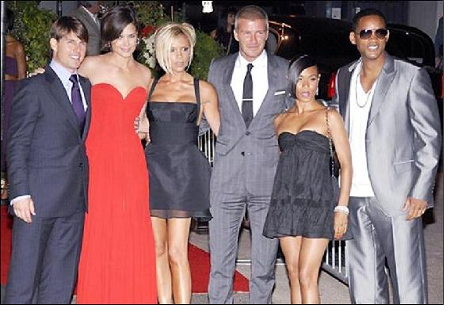

Chương Mười Tám

hông như đợt trước, cập rập sang TBN, phải ở nhà thuê, lần này vợ chồng Beckham chuẩn bị rất kỹ. David chưa sang Mỹ, Victoria đã đi tiền trạm, tậu ngay một căn biệt thự nguy nga giá 18.2 triệu đô, tọa lạc tại khu Beverly Hills sang trọng, có đủ hồ bơi, sân quần, và rạp chiếu phim riêng. “Dọn nhà qua Mỹ là một quyết định dễ dàng”, David chia sẻ, “Cuộc sống Mỹ phù hợp với tôi, Victoria, và các con. Tôi biết trình độ bóng đá Mỹ không cao bằng những nơi khác, nhưng một khi đã tới đây, tôi sẽ cố gắng tạo nên sự khác biệt, làm cho người dân quan tâm đến túc cầu hơn…Tôi chẳng ngu ngốc đến nỗi nghĩ mình có thể thay đổi cả một nền văn hóa, song điều tôi có thể làm là góp phần đưa bóng đá Mỹ lên một tầm cao mới”.
Biệt thự nhà Beckham ở Beverly Hills (Ảnh: Nowmagazine)
Nói rằng dân Mỹ chẳng hề quan tâm bóng đá thì không hẳn. Lượng khán giả Mỹ theo dõi World Cup 2006 trên truyền hình lên đến 16.9 triệu, tức là nhiều hơn số người xem giải vô địch bóng rổ (12.9 triệu) và bóng chày (15.8 triệu) cùng năm. Trong số người nhập cư đến Mỹ, nhiều người mang theo tình yêu cháy bỏng giành cho bóng đá. Có điều, họ chỉ xem Cúp C1, ngoại hạng Anh, La Liga, Serie A…, chứ cái giải “cùi bắp” MLS thì không ai ngó đến. Beckham đến Mỹ, coi như trở thành đại sứ chính thức cho MLS, nên không chỉ Galaxy, mà cả MLS đều ra sức o bế, cung phụng anh như một ông hoàng.
Tin Beckham cập bến MLS gây chấn động làng thể thao Hoa Kỳ và thế giới. Anh chưa ra sân trận nào, Galaxy đã bán hết veo 11 000 vé mùa, 250 000 chiếc áo số 23, và ký được hợp đồng nhận tài trợ béo bở từ hãng Herbalife. Tính tổng cộng, doanh thu thương mại của CLB tăng vọt đến 700%. MLS cũng hưởng lợi. Nếu như trước đây, họ phải trả tiền cho kênh truyền hình ESPN để kênh này chịu phát những trận đấu trong khuôn khổ giải VĐQG Mỹ, thì nay ESPN phải trả họ 64 triệu cho hợp đồng phát sóng MLS trong 8 năm[1]. Khắp nước Mỹ xôn xao, cả những người suốt đời không xem bóng đá cũng quan tâm, bàn tán. Đại học Staffordshire mở hẳn một khóa học về ảnh hưởng văn hóa của Beckham. Ellis Cashmore, giáo sư dạy khóa này, nhận định: “Tiger Woods và Michael Jordan có thể được tôn trọng, nhưng chỉ Beckham mới làm người ta cuồng si và tôn thờ. Tại một số nơi, Beckham đạt tới địa vị gần như thần thánh.”
Ngày 13 tháng 7, 2007, David ra mắt người hâm mộ Galaxy tại khu phức hợp thể thao Home Depot Center, trong buổi lễ được trực tiếp truyền hình khắp thế giới, trước 5 000 CĐV và 700 phóng viên. Giới truyền thông Hoa Kỳ sục sôi. Tạp chí thể thao Sports Illustrated phỏng vấn David, và đăng hình anh trên trang bìa, trong khi kênh truyền hình NBC giành hẳn một giờ cho phóng sự Victoria Beckham: Coming to America[2]. Ai nấy đều náo nức chờ đến thứ bảy, 21 tháng 7, ngày David chính thức ra sân dưới màu áo Galaxy, trong trận giao hữu với Chelsea. Truyền hình trận này, kênh ESPN đặt đến 19 máy quay trên sân, trong đó một máy chỉ để quay riêng Beckham, gọi là Beckham Cam.
Đến đây bỗng nẩy sinh sự cố: Khi sắp đặt lịch trình, các nhà tổ chức đã quên mất tình trạng thể lực của Beckham! Trận cuối cùng chơi cho Real, David phải rời sân vì chấn thương mắt cá, chấn thương ấy chắc chắn không thể khỏi trước trận gặp Chelsea. Làm sao đây? Bình thường, chấn thương thì phải nghỉ, trận đấu chính thức cũng phải nghỉ, huống hồ chỉ là giao hữu. Vấn đề là trong suốt 2 tuần trước đó, ESPN đã liên tục quảng cáo về trận Chelsea – Galaxy, thiếu điều bốc nó lên hàng…trận cầu thế kỷ! Vé vào xem cũng đã bán hết sạch. Người ta mua vé chỉ để xem Beckham, Beckham không ra sân thì biết ăn nói thế nào? Chẳng lẽ treo đầu dê lại bán chó? Sau cùng, các bên ngồi lại bàn bạc với nhau, cùng thống nhất với giải pháp: Cho David vào sân trong những phút cuối, đồng thời dặn kỹ Chelsea không được vào bóng mạnh với anh!
Mọi ngày, Galaxy ra sân trong SVĐ vắng teo. Ngày 21, cả sân không còn một chỗ trống. Trên khán đài danh dự có sự hiện diện của một trời sao: Katie Holmes, Eva Longoria Parker, Jennifer Love-Hewitt, thống đốc Arnold Schwarzenegger…Khi Beckham bước ra từ đường hầm, ngồi vào băng ghế dự bị, các tay phó nháy, tổng cộng đến 80-90 người, đổ xô đến chụp ảnh, chen lấn nhau té cả vào người David. Nhân viên an ninh phải can thiệp, lùa tất cả đi chỗ khác. Đội hình Chelsea du đấu tất nhiên không thiếu ngôi sao, nào là Didier Drogba, Andriy Shevchenko, Michael Ballack, John Terry, nhưng người Mỹ không biết và không quan tâm đến họ. Mọi sự chú ý đổ dồn vào David Beckham.
“Ngày mai tôi có ký hợp đồng với Zinedine Zidane, dân Mỹ cũng chẳng biết anh ấy là ai”, Alexi Lalas chua chát nhận xét, “nếu có biết thì chỉ biết đấy là anh khùng, đi húc đầu vào người khác. (Họ không xem trận nào của Zidane ngoài trận chung kết World Cup), làm sao biết anh là một trong những cầu thủ xuất sắc nhất của mọi thời. Buồn lắm, nhưng văn hóa Mỹ nó thế!”
Chỉ riêng Beckham tạo được sự khác biệt, bởi anh vừa là sao bóng đá vừa là sao showbiz. Có lẽ trong số người có mặt trên SVĐ hôm ấy, đến quá nửa không hiểu luật bóng đá nó ra làm sao. Suốt trận đấu, họ không lo theo dõi diễn biến, chỉ chăm chú vào băng ghế dự bị để ngắm David. Nhà đài ESPN cũng thế. Ngoài Beckham Cam ra, các máy quay còn lại liên tục lia về phía David và Victoria. Khi David, chắc vì ngứa ngáy gì đó, tháo một chiếc giày ra, cảnh này được…quay chậm lại đến vài ba lần. Rồi khi bóng từ trong sân văng ra đến chỗ David, được anh đá lại trở vào, cả khán đài vang lên tiếng cổ vũ nồng nhiệt, như thể vừa có một bàn thắng.
Phút thứ 78 là thời khắc lịch sử của bóng đá Mỹ: Beckham vào sân, thay thế Alan Gordon. Một rừng ánh flash cùng lúc nháy lên, lóa cả một góc trời. Mỗi lần David chạm bóng là một lần khán giả đồng thanh hô vang. Các cô cậu tuổi teen thì gào thét, khóc như mưa như gió. Mà David có biểu diễn kỹ thuật khó khăn gì cho cam, chỉ là mấy đường chuyền, vài pha đi bóng thông thường. Các cầu thủ Chelsea đã được dặn trước, ai cũng tránh, không va chạm mạnh với David.
Chẳng may, đội hình Chelsea lại có anh chàng “ngựa non háu đá” Steve Sidwell. Trong một pha tranh chấp, Sidwell ham bóng quên luôn lời dặn, đốn Beckham té bay lên không. HLV Frank Yallop tái mặt, cả SVĐ im lìm, nín thở nhìn David nằm trên sân. David gắng gượng đứng dậy, thi đấu nốt mấy phút cuối cùng, không biết rằng cú vào bóng của Sidwell đã làm vết chấn thương anh thêm trở nặng. Vì cố ra sân trong trận giao hữu này, anh sẽ phải vắng mặt một thời gian dài, bỏ lỡ nhiều trận cầu chính thức sau đó.
Đấy là chuyện tương lai, còn hiện tại, chỉ cần 12 phút ra sân, màn ra mắt của Beckham đã thành công rực rỡ. Tỷ lệ rating[3] trận Chelsea – Galaxy là 1.0, không phải đặc biệt cao, thậm chí thua cả rating các giải đánh golf, bóng rổ nữ, và đua xe phát sóng cùng thời điểm. Nhưng nên nhớ, trung bình mỗi trận trong khuôn khổ MLS chỉ đạt rating 0.2, lên đến 1.0 là điều chưa bao giờ xảy ra.
Ngày hôm sau, đến lượt Hollywood chào đón thành viên mới. Tom Cruise và Will Smith đóng vai “chủ xị”, mời David và Victoria dự dạ tiệc ở Bảo Tàng Nghệ Thuật Đương Đại Los Angeles. Đêm tiệc, cảnh sát phải dàn hàng, phong tỏa hết mấy khu phố bên cạnh bảo tàng, ngăn không cho các fan và paparazzi tràn vào. Dự tiệc hôm đó là những cái tên “hot” nhất của showbiz, ngoài 2 cặp vợ chồng nhà Cruise và Smith, còn có Eva Longoria Parker, Jamie Foxx, Jim Carrey, Bruce Willis, Stevie Wonder, Rihanna, Demi Moore…Toàn bộ dàn cầu thủ Los Angeles Galaxy cũng được mời.
Với những cầu thủ đa số “nghèo rớt mồng tơi” của Galaxy, được dự dạ tiệc sang trọng, gặp gỡ những minh tinh hạng nhất trong giới điện ảnh và âm nhạc quả là một giấc mơ. Giấc mơ ấy sở dĩ trở thành hiện thức hoàn toàn nhờ ở David Beckham. Sau này, đồng đội còn nhiều lần được “hưởng xái” từ Beckham như thế nữa. Lúc trước, mỗi khi thi đấu sân khách, các cầu thủ Galaxy đều phải đi vé máy bay hạng thường, và bị xếp ở tại những khách sạn tồi tàn, phòng ốc cũ kỹ, thức ăn nuốt không trôi. Khi Beckham đến, lên tiếng phàn nàn, ban lãnh đạo và MLS ngay lập tức nâng chuẩn cho cầu thủ được ở khách sạn cao cấp. Thỉnh thoảng, David hứng lên, muốn đi chuyên cơ, cả đội cũng được đi ké[4]…
Dù David không yêu sách, Galaxy biệt đãi anh cách vô cùng trang trọng. Chỉ riêng Beckham được phép đỗ xe trong khuôn viên SVĐ, ngay gần sân tập. Mỗi ngày, đồng đội lại thấy David lái một chiếc xe khác nhau, từ Escalade, Porsche 911, đến Rolls Royce Phantom. Giám đốc Lalas đề ra luật: Chỉ cầu thủ nào sở hữu xe giá hơn 100 000 đô mới được đậu gần xe Beckham. Trong đội hình Galaxy, mỗi hậu vệ râu xồm Abel Xavier, cựu tuyển thủ BĐN, là có xe đắt cỡ đó. Các cầu thủ còn lại đều phải đậu xe ngoài bãi đỗ công cộng, rồi lóc cóc đi bộ vào sân. Khi thi đấu xa nhà, phải ở khách sạn, duy Beckham và lão tướng kỳ cựu Cobi Jones được chuẩn phòng riêng, còn lại ở ghép hai người một phòng. Mỗi lần di chuyển bằng máy bay cũng vậy, Galaxy xếp chỗ ngồi cho cầu thủ dựa trên tiền lương. Beckham và vài cầu thủ có tiếng tăm ngồi khoang hạng nhất, ai nhận lương mức trung bình thì ngồi ghế giữa, nhận lương hạng bét đương nhiên ngồi đằng đuôi!
Biệt đãi đáng kể nhất là việc ban lãnh đạo tước băng đội trưởng từ tay Landon Donovan để trao cho David. Nói tước cũng hơi quá lời. Thật sự, Leiweke chỉ truyền đạt chỉ thị cho Lalas và Yallop, bộ đôi này kiếm lời nói khéo với Donovan, đề nghị anh…tự nguyện nhường chức. Donovan bất mãn ra mặt. Trước khi Beckham xuất hiện, anh đường đường là cầu thủ xuất sắc nhất nước Mỹ, là ngôi sao sáng nhất của Galaxy, nay bỗng nhiên hóa ra…kỳ đà cắc ké, có mỗi cái băng đeo tay cũng giữ không nổi. Lalas và Yallop phải sắp xếp cho David gặp gỡ, dùng bữa thân mật với Donovan, hòng gắn kết hai trụ cột với nhau. Tuy vậy, Donovan chỉ bằng mặt mà không bằng lòng.
Ngày xưa, Beckham nhận thấy Sir Alex Ferguson thiên vị Eric Cantona là lẽ dĩ nhiên. Bây giờ, cầu thủ Galaxy cũng trong tâm trạng như thế. Họ không tỵ nạnh với David, bởi người đặc biệt cần được đối xử cách đặc biệt. Họ chỉ tủi thân tủi phận cho mình. “David lãnh 6.5 triệu một năm thì tôi cũng mừng cho ảnh. Ảnh xứng đáng mà”, Chris Klein nói như thay lời các đồng đội, “Chỉ ước gì chúng tôi cũng được trả kha khá một chút, nhất là khi các ông chủ giải đang ăn nên làm ra như thế này.”

3 cặp vợ chồng: Tom Cruise, Beckham và Will Smith, trong buổi đón mừng David đến Mỹ (Ảnh: Toledoblade)
Chú thích:
[1] Cũng nhờ thương vụ Beckham, Tim Leiweke được bình chọn là Nhà Quản Lý Thể Thao Xuất Sắc Nhất Nước Mỹ Trong Năm.
[2] Ở Việt Nam, cầu thủ bóng đá lên bìa các tạp chí, xuất hiện trên truyền hình là điều rất thường. Song ở Mỹ, nơi truyền thông hầu như không quan tâm đến túc cầu, đó là sự kiện lớn, rất hiếm có.
[3] Tỷ suất bạn xem đài, theo dõi các chương trình truyền hình.
[4]Gian đoạn đầu ở Galaxy, David chưa ý thức được sự chênh lệch giàu nghèo cực lớn tại CLB. Quen ở Real, nơi ai cũng là triệu phú, khi đi ăn cùng đồng đội Galaxy, anh không đứng ra bao, mà để mọi người tự trả tiền phần mình. Các cầu thủ Galaxy khá bất mãn về chuyện này, vì trước kia, mỗi lần đi ăn, cầu thủ có thu nhập cao nhất là Landon Donovan luôn đóng vai “đại ca”, bao hết cả bọn.